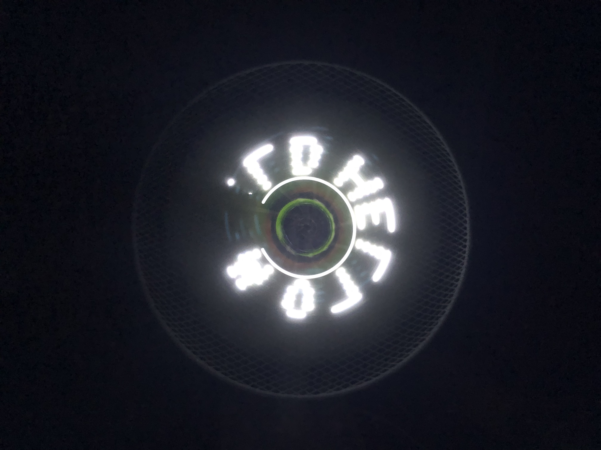
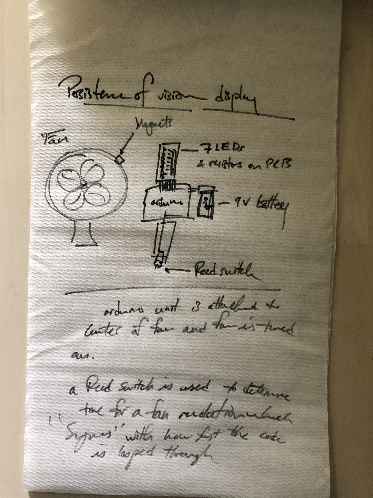
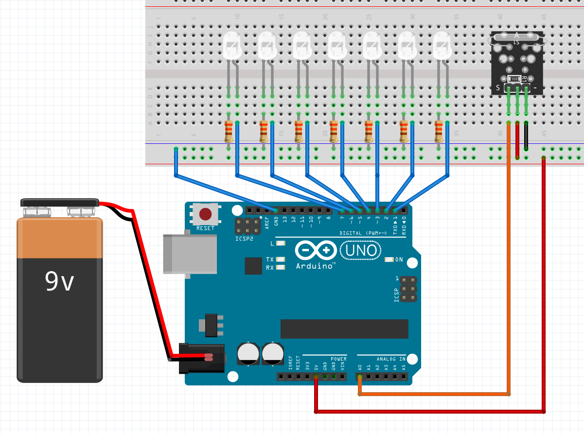
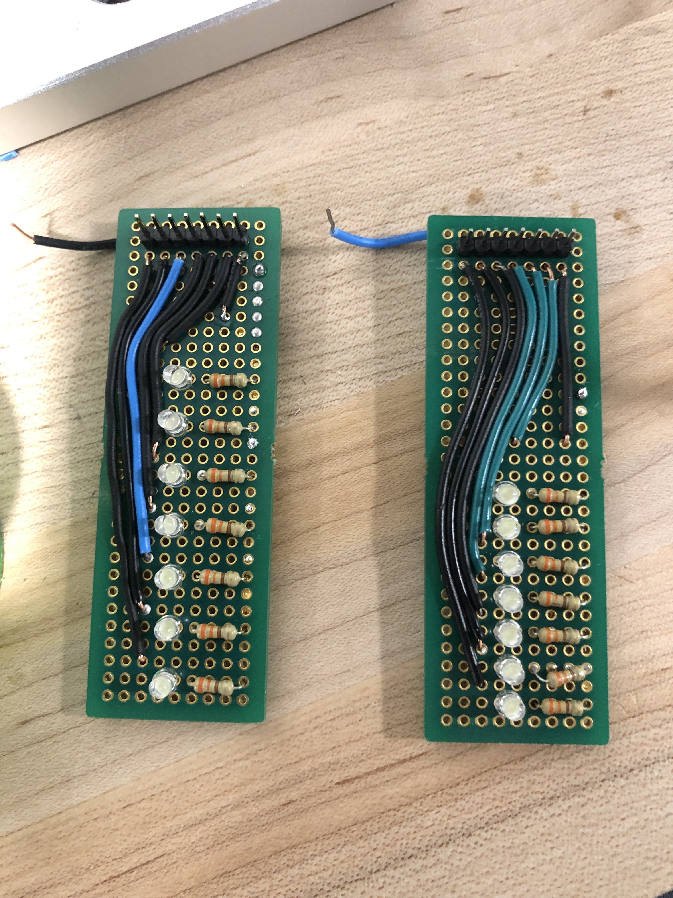
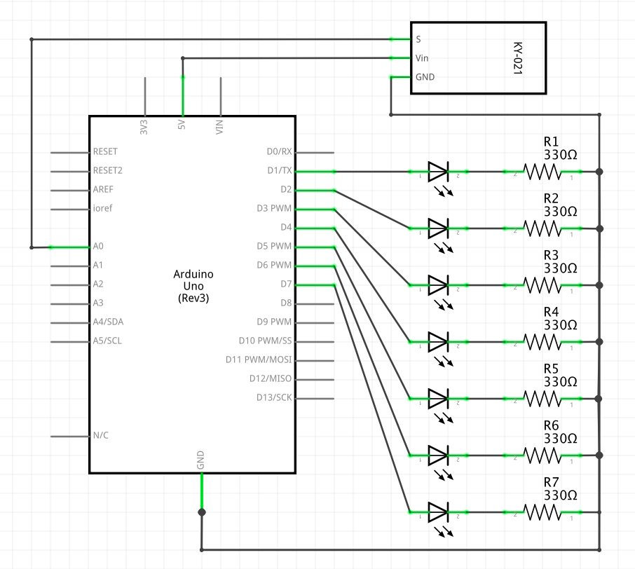
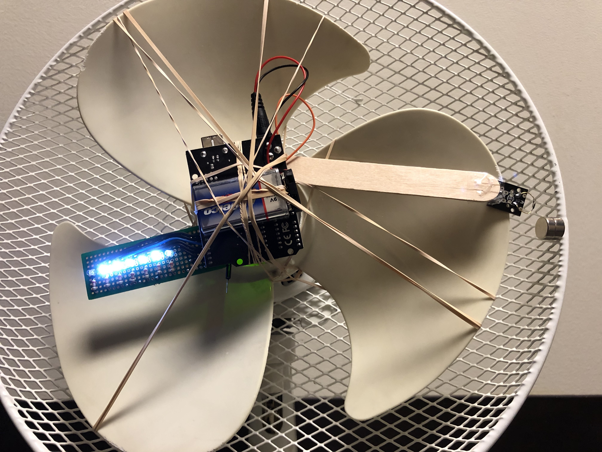

My final project: What goes around comes around
Concept
When we look at things, what we see stays in our retinas for about 1/16th of a second. It's called persistence of vision. Knowing this, if we can flash LEDs fast enough in sequence, we can actually display things that appear static. So with 7 LEDs, we can spell out something like "Hello world." It's pretty cool!
Video
There are two problems with my implementation. The first is that the words are backwards. The second is that the words are actually moving with the fan. Ideally, the words should appear as static. They don't because the rate of each fan revolution is not the same as the rate at which the program gets looped through. To solve this, I attached a magnet to the top of the fan as well as a reed switch to the arduino so my program could detect when a full revolution occured. The problem is that the reed switch is a fairly fagile component and I broke the hermetically sealed glass envelope that housed the reed contacts. Unsurprisingly, it didn't work after that.
Build-of-Materials
- Arduino Uno
- Reed switch
- 7 330 Ohm resistors
- 1 printed circuit board
- 7 white LEDs
- Fan
- Hook-up wires
- Breadboard for testing
- 9 volt battery
- 9 volt battery clip
Circuit
PCB & Soldering
Schematic
Implementation
Code
int timer = 800; // initialize a timer for delay purposes later on
int State = 0; // initialize State (for use with reed switch)
int lastState = 0; // initialize lastState, which is the most recent state from reed switch
boolean space[]={0,0,0,0,0,0,0}; // implements a "space" to be used between letters so we can discern them more clearly
boolean H[]={1,1,1,1,1,1,1,0,0,0,1,0,0,0,1,1,1,1,1,1,1}; // boolean value of how 'H' will be displayed on 7 LEDs
boolean E[]={1,1,1,1,1,1,1,1,0,0,1,0,0,1,1,0,0,1,0,0,1}; // boolean value of how 'E' will be displayed on 7 LEDs
boolean L[]={1,1,1,1,1,1,1,0,0,0,0,0,0,1,0,0,0,0,0,0,1}; // boolean value of how 'L' will be displayed on 7 LEDs
boolean W[]={1,1,1,1,1,1,1,0,0,0,0,1,1,1,1,0,0,1,0,0,1}; // boolean value of how 'W' will be displayed on 7 LEDs
boolean O[]={1,1,1,1,1,1,1,1,1,0,0,0,1,1,1,1,1,1,1,1,1}; // boolean value of how 'O' will be displayed on 7 LEDs
boolean D[]={1,1,1,1,1,1,1,1,0,0,0,0,0,1,0,1,1,1,1,1,0}; // boolean value of how 'D' will be displayed on 7 LEDs
boolean R[]={1,1,1,1,1,1,1,0,1,1,1,0,0,1,1,0,0,1,1,1,1}; // boolean value of how 'R' will be displayed on 7 LEDs
int pos; // sets pos variable to be used later
void setup() {
for (int Pin = 1; Pin <=7; Pin++) { // loop through each pin
pinMode(Pin, OUTPUT);} // set each pin as output
pinMode(A0, INPUT); // set pin A0 as input
}
void loop() {
State = analogRead(0); // set state to analogRead 0 (Reed switch)
if (State != lastState){ // if state doesn't equal most recent state,
if (State == HIGH){ // if state is high (there is a magent detected),
delayMicroseconds(5000); // delay by 5000 microseconds
WriteLetter7Width(H); // "write out" letter 'H' with WriteLetter7 function
Space(space); // "write out" space with Space function
WriteLetter7Width(E); // "write out" letter 'E' with WriteLetter7 function
Space(space); // "write out" space with Space function
WriteLetter7Width(L); // "write out" letter 'L' with WriteLetter7 function
Space(space); // "write out" space with Space function
WriteLetter7Width(L); // "write out" letter 'L' with WriteLetter7 function
Space(space); // "write out" space with Space function
WriteLetter7Width(O); // "write out" letter 'O' with WriteLetter7 function
Space(space); // "write out" space with Space function
WriteLetter7Width(W); // "write out" letter 'W' with WriteLetter7 function
Space(space); // "write out" space with Space function
WriteLetter7Width(O); // "write out" letter 'O' with WriteLetter7 function
Space(space); // "write out" space with Space function
WriteLetter7Width(R); // "write out" letter 'R' with WriteLetter7 function
Space(space); // "write out" space with Space function
WriteLetter7Width(L); // "write out" letter 'L' with WriteLetter7 function
Space(space); // "write out" space with Space function
WriteLetter7Width(D); // "write out" letter 'D' with WriteLetter7 function
Space(space); // "write out" space with Space function
lastState = State; // update lastState with newer State
}
void WriteLetter7Width(boolean letter[]){ // WriteLetter6 function takes in letter
pos=0; // sets pos to 0
for (int n=0; n<=7; n++){ // Loops through from 0 to 7
for (int Pin = 1; Pin <=7; Pin++) { // Loops through each LED pin
digitalWrite(Pin, letter[pos]); // digitalWrite to the current pin the letter at pos
pos=pos+1;} // updates pos by adding one (this traverses through the arrays above where the boolean values are set)
delayMicroseconds(timer);}} // delay by timer value
void Space(boolean letter[]){ // Function takes in letter (this is only actually used for spaces between letters)
pos=0; // sets pos to 0
for (int Pin = 1; Pin <=7; Pin++) { // Loops through from 0 to 7
digitalWrite(Pin, space[pos]); // digitalWrite to the current pin the letter at pos
pos=pos+1;} // updates pos by adding one (this traverses through the arrays above where the boolean values are set)
delayMicroseconds(timer);} // delay by timer value